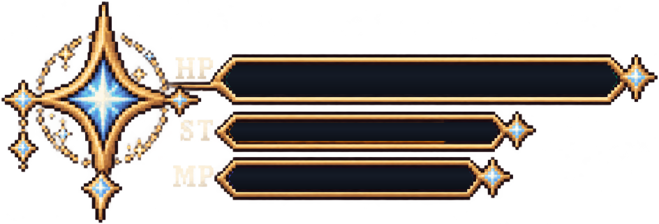

Esc / P でも再開できます
↑↓ で選んで Enter
Enter / R でもう一度挑戦
WASD: 移動
左クリック: 攻撃（ナイフ）
右クリック: 回避
Q: 魔法（詠唱→発動）
E: 魔法パレット（マウスで選ぶ）
Esc / P: 一時停止
F1: ヘルプ表示/非表示
↑↓ で選んで Enter で決定 ／ Esc でタイトルへ
今後実装予定です！
お楽しみに！
←→ で選んで Enter で決定 ／ Esc で戻る
ステータスは男の子・女の子とも同じです
設定はこの端末に保存されます
スマホを横向きにして遊んでください
読み込み中...